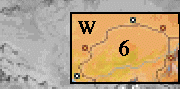
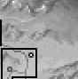
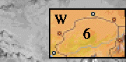
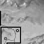
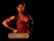
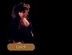
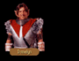
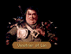

|
 |  |
 | ||||
| |||||||
|
 | |
 | ||||
| |||||||
The war drums had begun at dawn.Stalking quietly the corridors of the ancient fortress, Narab carried a witchlight to illumine his way. As he approached the doors to the Great Hall, two moredhel guards dressed in full battle regalia stood away. They made no sound as he whisked past nor blinked at the sight of him.
"Greetings, Narab," a cold voice called from the throne. "It has long been since I have seen your face in Sar-Sargoth. Have you grown bolder or more the fool?"
Narab knelt at the base of the throne and kissed Delekhan's foot. "That is for you to decide. If my words are not to your liking, then my life is yours."
"It is already mine." Delekhan's wolfish eyes blazed in the darkness. "Speak," he commanded.
"I have just returned from a journey into the Kingdom. I bring a prize."
"I have no interest in valueless baubles."
"This is no bauble," Narab said, cutting off Delekhan, "and I think you will find it is of great value."
"And would it have name, this thing?"
"Yes, my lord. Its name is Gorath!" Narab sneered pridefully as he awaited his leader's praise, awaited the words that would restore his place in moredhel favor and rescind the order of death on his head. Perhaps he would even have a place among the new lords...
Delekhan lunged from his throne, his razor edged gauntlet tilling a bloody seam across Narab's face as he lashed him backwards.
"You've wrecked everything, you dog!" Delekhan bellowed.
"But...I have brought back the enemy of the Northlands!" Narab sputtered, blood dripping from his torn lips. "With Gorath captive we can proceed with our..."
"You...know...nothing!"
Narab retreated, suddenly aware that his efforts were wasted, that his oath of loyalty meant nothing to his hateful lord. Resolutely he stifled a flash of pain as the moredhel leader thundered towards the doors.
"And what of my life?" Narab whispered.
Halting, Delekhan turned and hissed, "It is forfeit!"
Owyn didn't want to be awake.Perhaps it was the drugs they had given him or the endless walking that he'd done in the past month and a half. All he could think about was sleeping now, that restful non-existence that interrupted the beatings and the hauling and the exhaustion. He just wanted to sleep but that irritating jangle wouldn't let him. Where was it coming from?
"Gorath?" Owyn asked. "Are you there?"
Suddenly the jangle rattled louder, this time accompanied by a loud creak and a flood of torch light as bright as the sun. Out of that glowing corona lumbered the largest moredhel he had yet seen...
DELEKHAN: I see my assistants have been overzealous in their efforts to sedate you! It is proper to tremble when you are addresed by Delekhan, leader of the unified tribes of the Northlands!
DELEKHAN: We found this among your things, Kingdom dog. Tell me where you were going with it!
OWYN: We weren't taking it anywhere. We just picked up everything we could and ran. We needed gold...
DELEKHAN: A lie! The seal that the Nighthawks use for our messages was broken. The new writing at the bottom of the page confirms your guilt. What does Gabot's Folly mean? Who are Arthur and Jimmy the Hand?
OWYN: I really have no idea. Someone else must have beaten us to it and opened the scroll before we got there. We took what we found and left before we got nabbed. Do you want us to cut you in on the booty?
DELEKHAN: What I want is information! Your companion Gorath damns you as certainly as your lie does. Until he betrayed his own, he was second in power only to me. He shall die for his disloyalty.
DELEKHAN: Since you choose to remain silent, I shall have your tongue and feed it to my rats. Have back your message, spy. It will do you little good in your grave.
Delekhan stalked away.
Still rattled by his interrogation, Owyn tried to collect his fuzz coated thoughts into a coherent whole. Thankfully, his wits had provided the lies as needed, but only narrowly had he avoided the impulse to tell everything he knew. It was almost as if he was being prodded, coerced, bewitched...
Magic?
Astonished he had been unaware of it at the time, the boy looked again at the bulky warrior who now stood whispering over Gorath's limp form. At first he believed Delekhan was incanting a spell, one perhaps intended to coerce the truth from his victim, but after a few moments it became clear the warlord was conversing with his barely conscious friend.
"No!" Gorath croaked, shaking his head.
"...plans...unfulfilled," Delekhan whispered finally. Abruptly he struck...
It was too much to absorb.
Even if the events unfurling before him weren't openly damning, Owyn had seen enough to keep him swimming in a sea of doubts, all of them centering on the loyalty of his friend and traveling companion. Worse still, he had to deliver the message to Prince Arutha outside the Dimwood and he would need Gorath's help to do it. Desperately he wished he had time to sort things out, but time was the one commodity he didn't have.
"Enjoy your deaths. I know I shall." Delekhan's scratchy voice snatched Owyn out of his thoughts, directed his attention to where the moredhel stood in the doorway gesturing to someone in the dungeon corridor. From nowhere a monolithic door swung into place and once again the room was a land of shadows.
Experimentally, Owyn struck the bars of his cage, knowing full well the corroded structure was too solid to yield. But even as his fingertips came a way from the metal, the bars began a keening vibration, the iron harmonies evocative of distant temple bells.
Someone was working magic...and it wasn't him.
Owyn wasted no time.
Later, he could debate to his heart's content about who it was that had set them free and what their reasons for doing so might be, but at the moment he had no thought in him but finding a means to get them out of the darkened cell alive. Hurrying to Gorath, he freed him of his iron manacles and allowed the moredhel to lean against his shoulder as they limped together towards the heavy dungeon door. Again, tugging at the handle, they found that the lock was undone, another gift from their unknown benefactor.
"What about the guard?" Owyn whispered, allowing Gorath to stand once more on his own.
Gorath lifted his head and spoke, his speech still slurred by the drugs that had been administered to them. "Keep moving," he said, waving a hand at the door. "No one is there."
Pushing out the door, they found themselves confronting a wide hallway with passages leading in three other directions...
| DUNGEON: Re-enter Prison |
Owyn shivered.Uncertain how long he and Gorath had spent in the darkness of the room beyond, each rendered helpless by the mind numbing drugs administered by Delekhan's assistants, he was in no hurry to return to the cages. "I think we already know what lies that way," he said to Gorath. "Let's try another way."
| DUNGEON: Exit Central Chamber without Weapons |
Gorath noticed the chests.Suddenly aware they were unarmed, he motioned to the containers.
GORATH: I think we should check the contents of those boxes before we leave this chamber. We may have need of weapons before we leave and I think it possible those storage boxes may contain items of use to us.
OWYN: What if they're trapped?
GORATH: To what end? If Delekhan wished us dead, he has had ample opportunity to make us so with no advantage to keeping us alive. Have no doubt in you that Delekhan would have seen me dead at dawn...
OWYN: I've been thinking about that. Why wait? If you and Delekhan are the infamous enemies you claim to be, then I would think he'd have you hung at the gibbet immediately. There's no one left here at Sar-Sargoth to put a show on for, because most of his supporters will be in the east getting ready for the attack. And why aren't there guards outside the cell?
GORATH: Of that, perhaps I know something. Before Delekhan came to our cell, I heard the guards whispering that our captor, Narab, has escaped from Sar-Sargoth. If he has cause to escape, then I must assume he and Delekhan have come to an end in their friendly alliance. If this is the case, then I must assume our watchers have been sent to find Nago. He would be a most dangerous creature to cross and could prove troublesome if he has decided against the Kingdom attack.
OWYN: Perhaps this Narab fellow set us free. He might be looking for an ally.
GORATH: Though Narab and I have no love for one another, there may be some truth in that speculation. His brother Nago was a sorcerer of no small skill, and it is possible he himself might have enough of the old talent to have opened your cell. And while in no way would he directly lend assistance to me, it is possible he hopes for some distraction in our escape while he maneuvers on his own.
OWYN: Like letting the cattle out of the corral during a raid! The folk are so busy trying to round up their cows, they never know about the thieves slipping into their houses!
GORATH: Something to that effect, yes. Now, let's have open those chests and see what we can find.
| DUNGEON: STONE SLAB |
"Delekhan united the clans of the north at this spot. All who visit here should kneel and praise the gods for his grand power and wisdom."
| LOWER to UPPER | UPPER to LOWER |
|
Gorath halted at the stairwell. For a moment he narrowed his eyes as if he were intently listening, then turned to face his companion. "I should like to know your opinion," he said, his eyes lambent in the near darkness. "It is possible that Delekhan has posted guards on the other side of this stairwell. If so, we may die even before we draw weapons." "We'll die if we don't go up as I see it," Owyn replied. "Die in a dungeon or die fighting for our lives. I'd at least like to think I was trying something." Gorath smiled. "At times you are not the boy you pretend to be. But still we have the decision. Are you ready to make the ascent right now?" YES: The stairwell was unguarded. Breathing a sigh of relief, Owyn followed after his friend as they progressed down the corridors of the dungeon. |
The stairwell spiralled downward. "Well," inquired Gorath. "Shall we?" YES: They descended noisily. Several times Owyn nearly lost his footing on the stone steps, but fortunately caught himself before sending them all tumbling down the stairwell. At last, they emerged into a large corridor. |
| UPPER to Sar-Sargoth | Sar-Sargoth to UPPER |
|
Gorath looked up the narrow stairwell. It was definitely a way up, but he questioned whether it was the right way for them to be going at the moment. "What do you think, Owyn?" he asked. "Feel like climbing all that way back up?" YES: They weren't observed. Thankful they had emerged from the dungeon alive, Gorath made a mental note to say a prayer of thankfulness to Ruthia once they were in safer circumstances. There still was the matter of escaping the outer perimeter of Sar-Sargoth to worry about... |
Gorath stared at Owyn. "We've just escaped from the dungeons and you wish to return to them?" the moredhel asked. "What are you thinking?" The boy shrugged. "It's your decision, Gorath. Do you want to go back down there?" YES: Gorath sighed. Taking a chance the boy's instincts might be taking them the proper way, they descended once more into the darkness of Sar-Sargoth's dungeons... |
| SAR-SARGOTH |
The road was rocky and rutted.Staring into the distance he saw that the road snaked its way toward an imposing fortress city. "Sar-Sargoth," Gorath said. "Do you think we should go in for supplies?"

Though a frosty wind skirled dust around the moredhel stronghold of Sar-Sargoth, no snow or ice formed on its ancient battlements. Instead, there was only a lonely howl that whispered between a thousand pikes which fanned out in every direction from the fortress, each graced with a decapitated head.
| SAR-SARGOTH INN: COMMONS |
Unaware until he stepped into the room that he had been chilled, Gorath was glad to have the solid oaken door of the room closed behind him. Others within seemed likewise contented as they chatted quietly among themselves, taking little notice of the new arrivals.
| SAR-SARGOTH INN: MAN #1 |
The man had the look of a mercenary.Unkempt and unshaven, he certainly was not hired with a group, for in larger companies the captains required discipline of self as well as discipline of sword, neither characteristics which seemed in evidence in the man's stubbled face. His eyes also seemed to reflect a vacant stupidity, a quality undesirable in any clan chief, but a positive boon for soldiers in the field.
"Delekhan pays well," he said, swilling down the contents of the alecup in his grasp. "But I can't say I much care for his drinks. He needs to hire Keshians rather than Quegians if he wants to improve his stock."
"I don't believe that is what most interests him," Gorath replied.
"His loss," the man said. "His loss."
| SAR-SARGOTH INN: MAN #2 |
The man waved them over.Gorath made no hurry of approaching the man, taking time to make note of several things, not the least of which was that three different knife hilts protruded from under the man's leather belt. The man was a bounty hunter.
"We appear to be of mutual interest," Gorath said.
"You seem a little out of place," the man said, narrowing his gaze. "You'll not be traders because you didn't offer me a drink. It also seems unlikely you are mercenaries because you don't have their smell on you. So what is it then? Vagabonds , beggars...traitors?"
Gorath smiled dangerously. "If you imagine a jingle in your pouch for claiming our heads, let me reassure you, you'll have only skulls for your efforts. There are no blood prices upon us, hunter. Of course, I wouldn't expect you to take us at our word."
"Of course not," the man replied, returning the smile. "You won't mind that I ask a few of the other patrons here if they recognize your faces?"
Gorath motioned to the bar. "Please, be our guest."
| SAR-SARGOTH INN: MAN #3 |
Gorath cleared his throat.Glancing up from the business of cleaning his fingernails with a bootknife, the man regarded them frostily, motioning with the tip of his knife for them to quickly make their business known.
"Scaba," Gorath said, hoping his Quegian was up to par. "Benuit tal regenus?"
The man smiled, showing uneven brown teeth. "Pel niskum, seb michina chea."
"Ved cadium, nes carlyannius," Gorath hissed in reply, taking hold of the mercenary's shirtfront. "Caddan gutari sebruliya! Hekoch!"
"If you're not going to have the decency to fight while speaking Kingdom tongue, you'll not be fighting at all," Owyn said, rapidly incanting.
Immediately a brilliant flash filled the space between the two brawlers, hurling both back as thunder rumbled through the rafters, threatening to bring the roof down on their heads. Waggling his finger at them both, Owyn went off to look for something else to do.
| SAR-SARGOTH: Impaled Corpse (invalid?) |
It was a skull.Though he couldn't reach it directly, he shook the pike on which it was impaled and was satisfied to hear it make a faint rattle.
Gorath shook the skull loose.
Falling to the ground like a wine goblet tumbled from a table, it spilled its contents onto the moredhel soil. Quickly, Owyn scrambled to investigate before replacing it.
Meet: LIALLAN
| SAR-SARGOTH GRAVEYARD |
Owyn gasped. Looking from one headstone to the next, he was horrified that each bore either his or Gorath's names...OWYN: How can they have made these stones so quickly?
GORATH: They are possessed of an evil magic, these stones. They are known as the Terror Stones. Condemned of Sar-Sargoth are sometimes on the eve of their execution brought to this place and interred so that their head remains above ground. Until the time they are to die, they gaze onto their names and often go mad. I can only assume Delekhan intended that we were to be brought here...
OWYN: After people are executed, are they buried here?
GORATH: We are like unto the Eledhel in our ways of the dead. Once a moredhel falls in death, that which lies upon the ground is a living thing no more, only rotting meat, unworthy of further attention. Only when we intend great insult do we inter our kin.
| MEMORIAL SLAB West of Sar-Sargoth |
"The battle of Sar-Sargoth was fought here. Let all who visit this place remember the strength and courage of our ancestors. May their legacy stand forever."
| NALAR'S RIB (untriggered) |
Gorath approached the slab."I wonder what purpose this serves out here?" he said. "Notice how the rocks around it are slightly scorched, but the vegetation seems normal. It is as though there were a terrible fire here many years ago."
Still puzzling over the strange object, they picked up their packs and left.
| NALAR'S RIB (triggered) |
GORATH: This must be Nalar's Rib. The note we found said to put an emerald in the notch at the top. What do you think?
| YES (Emerald) | YES (no Emerald) | NO |
|
Owyn took an emerald and carried it carefully to the stone slab. When he was still several steps
away the gemstone began to feel very warm in his hand, and by the time he reached the slab the
stone was crackling and shooting small sparks as from a piece of struck flint. It was all he
could do not to drop it in the dust. Fighting the pain, which was growing in intensity with every inch, he jammed the emerald into the notch atop the stone. A blast of energy slammed him to the ground... Shielding their eyes from the flood of swirling light that was now emanating from the slab, they watched it gleam and pulse, heard it scream and shriek, felt it burn and electrify with blasts of energy greater than a lightning filled storm. It stopped as suddenly as it began, and still shaking they climbed to their feet, trying to regain their scrambled senses; blinking to see again, yawning to unplug their ears, stretching to soothe their aching bones. |
They examined the slab carefully. On the opposite side of the slab their attention was drawn to some shiny green specks in a scorched slot ear the top. GORATH: The specks appear to be small emeralds though they have very rough edges. Curious... |
Gorath shook his head. "We have no idea what might happen. I don't think that would be a good idea. Let's leave this place." |
| NALAR'S RIB (activated) |
Gorath approached the stone.He was somewhat surprised to find it cool to the touch, considering the tremendous amount of power and destruction it was capable of producing. He shivered slightly at the thought of it, and was relieved when they left a few minutes later.
| HOUSE WEST OF CAERN |
Gorath knocked on the door, though he was sure no one would answer.The door didn't appear to be locked, and after a hard shove with his shoulder he was able to force it open.
A small table and several chairs adorned the room, along with several small beds. The owners had apparently taken everything easily carried when they left.
"Take a look around, Owyn. Perhaps we shall find something we can use."
| CAERN SHOP: OEIRDU AND COMPANY |
The lay of the goods store was comfortably familiar, arranged in such a common sense fashion that it took only a few moments for Gorath to locate the items which interested him.
| CAERN HOUSE |
Gorath frowned at the door, then turned to leave."Wait a minute!" cried Owyn. "Where are you going? Do you know who lives here or something?"
Gorath, annoyed, turned around and went to the door. He knocked lightly.
"There doesn't seem to be anyone he--" He was interrupted by the sound of the door creaking open. The door was to his back, so only Owyn could see the pained look on Gorath's face. He turned around slowly.
There was instant recognition on the face of the female moredhel. They obviously knew one another. She smiled at Gorath salaciously, and pulled his reluctant form into her house, leaving Owyn standing in front of the door.
After several minutes Gorath returned, backing out of the house and nodding.
"What was THAT all about?" Owyn asked with a grin.
"Nothing. Just a -- an admirer," said Gorath. "She didn't have much news that we don't already know. Let's get out of here."
| CAERN HOUSE |
| FIRST VISIT | SECOND VISIT |
|
Gorath knocked on the wooden door, and patiently waited for an answer. When the door swung open, he found himself staring down at a small child. Seeing Gorath, his eyes widened. Seeing Owyn they got even wider and he disappeared back into the house, just as his mother came forward. She spoke to Gorath in moredhel, as though she knew him, but scowled every so often at Owyn. She had the child bring some fresh water, and after a few more words with Gorath, closed the door. "Her husband, along with most of the males in the area, have left to fight with Delekhan. The females and children must fend for themselves." "Is it that easy for your race to just leave everything behind like that?" asked Owyn. Gorath turned to the young magician with a somber look on his face, "They did not have a choice." |
A familiar female face answered the door. Gorath spoke to the woman for a minute, then stepped back from the door as it closed. "She has nothing new to tell us." |
| TENTS SOUTH OF CAERN |
|
The small tent seemed just like the rest. Owyn pulled back the front flap and looked inside. "Whoever left these tents behind must've been in a big hurry, huh?" he asked. Gorath was scanning the horizon, he shook his head. "Yes, this is strange indeed. Take a look inside, perhaps they left something behind in their hasty exit." |
Owyn approached the small tent. "Judging by the way this tent is sealed up," he whispered, "I'd say if there is anyone still inside they don't want to be disturbed right now." |
| CULLICH'S WELL |
Gorath looked at the small well and couldn't help but remember the day it was built. The hole was no sooner dug than the skies opened up. Rain fell for several straight hours, making the completion of the job a muddy slippery mess.He smiled as he remembered his friend, Droelek, slipping backward into a large puddle. How they had laughed!
His smile faded as he remembered the day Droelek left to follow Murmandamus. He had not returned...
"Come on," said Gorath. "Let's fill up our pouches with fresh water and leave this place."
| CULLICH'S HOUSE |
Gorath paused in front of the door.
Then, much to Owyn's amazement, he pushed it open without knocking and walked inside.Inside, the cottage felt more house than home. Empty, save for shards of broken crockery in one corner and a few rudely made stools for sitting, the witch's home was nearly as cold as the winds which howled outside.
Meet: CULLICH
| WYKE SHOP: WYKE ARMORS |
Everywhere Owyn looked, polished metal gleamed. As much a temple to war as any Temple of Tith, the cramped shop offered a startling variety of weapons and armor.
| WYKE HOUSE |
The moredhel who answered Gorath's knock, had a long scar that ran from just above his eye, to an unseen spot under his chin. He greeted them in moredhel. "I am Gralek. Why do you come here?" Gorath asked if they could enter and the moredhel reluctantly agreed. As he lead them into his house, Owyn noticed that he had almost no use of his right leg.Shuffling inside, he explained his deformity to Gorath, "I followed Murmandamus into Kingdom territory. We attacked a very strong fortress there and just as we finally gained our entry, flames from hell engulfed us. Now I can no longer fight. My brothers have joined a new leader, and even now they prepare for a fresh attack! My blood burns to join them but I cannot."
Gorath conversed with the moredhel for a few minutes more. Then he motioned for Owyn that it was time to leave.
| WYKE WELL - FIRST TIME |
Steam rose from the small well.Holding his hands over the opening, Owyn could feel the heat rising off the water far below. "It seemed strange they would put a drinking well so close to the river, but I have heard stories of these special wells. The water is supposed to have mild healing properties. Shall we take a drink?"
| YES | NO |
|
Gorath scooped some water from the well, waited for it to cool, then took a small sip. The water
warmed him and had no strange taste or smell. He waited for a telltale numbing of his mouth or
tongue and after several minutes, when he still felt fine, urged Owyn to take a drink with him.
The water made Owyn feel warm inside and after a few minutes he felt stronger. "Let us take
some of this fine water with us," said Owyn, removing his water pouch from his pack. "No!" Gorath said. "If I recall the story, too much of this water can be poisonous. Perhaps we should take another drink and be on our way." | They decided not to risk sampling the water from the strange heated well. Owyn pulled a small bottle out of his pack and took a step forward, contemplated taking a small sample for "testing" later, but seeing Gorath's expression quickly decided against the idea. |
| WYKE WELL - SECOND TIME |
The well stood before them ominously.Gorath remembered Owyn's warning about drinking too much of the water. "Should we have another drink?" he asked.
| YES | NO |
|
Gorath scooped some more water from the well and let it cool slightly before taking a drink. It
tasted the same as before. He waited for several minutes, then urged Owyn to take another drink.
Owyn raised the water to his lips and was about to take a drink when Gorath knocked the drinking
container from his hands. The water spilled to the ground. "But you said to take a dr--" Owyn began. He stopped when he noticed the pale expression on Gorath's face. "I'm afraid you were right, young friend. I think there can be too much of a good thing. We should leave." | Deciding against another drink, the young magician and the moredhel gathered their packs and prepared to leave. |
| CLOSED EXITS: Road South & Bridge East of Wyke |
GORATH: Don't be in such a hurry my young friend.OWYN: What's wrong?
GORATH: Soldiers ahead. Delekhan loyalists no doubt. Though I may swing a sword and you wield great arts, I do not believe we would alone do well against these fighters for others will be camped in very close proximity. We would probably be safest choosing a different route back into the Kingdom. Let us turn back.
| TENTS EAST OF HARLECH |
|
As they approached the tent Owyn could hear the sounds of someone working inside.
Abruptly, the sound stopped. Gorath called out a greeting in moredhel and a moment later a
small moredhel joined them. "Well, my elusive friend," he said, I heard news you had been recaptured, but I see you have eluded Delekhan once again. And what of the rest of the Green Heart Clan?" Gorath stole a glance beyond the moredhel, into the tent, then spoke slowly, "Some fled, others have been pressed into service by Delekhan. And what of you, old friend? What is your story?" "I have no loyalties. My ship has always been steered by the Captain least likely to get me killed. Now, I stockpile supplies for the army that approaches." "You do not think Delekhan's plan to attack the Kingdom will get you killed? Just as your brothers were killed following Murmandamus?" Gorath shot back. "When that time comes, perhaps I will seek a new Captain," he said. He looked at Gorath for a long time, then added, "There are some boxes to the southeast. Now go." |
The tent was open, but there was nobody inside. While Gorath stood watch out front, Owyn went inside to look around. There were several piles of wood and some woodworking tools along one wall of the tent, and some unfinished chests near the other. "Have you found anything?" Gorath called. "No, just some wood and some tools. Looks like someone is building some chests." There was a short pause, then Owyn heard Gorath say, "Yes, or perhaps taking some apart." |
| MAGICIAN'S WELL North of Harlech |
Standing before the well made Owyn feel very strange, like a thousand eyes were watching him, staring at him, burning into his soul. He shivered uncontrollably."This well is said to have special properties, though few have ever been able to drink from it," Gorath said.
"Why is that?" asked Owyn, still shivering.
Gorath turned slowly and looked down at Owyn. "Because it is very dangerous -- and because only practicers of magic can survive its powers. The decision is yours, my young friend. Do you wish to drink from the well, Owyn?"
| YES | NO |
|
Owyn took a sip of the magical water. At first there was no effect, save the powerful beating of his heart, which had actually begun even before the water touched his lips. Then, slowly, colors began to swirl in front of him, a rainbow with wings that dipped and soared, creating beautiful patterns of light and color in the air. Faster, faster, blending, crashing together until at last an image began to form. Owyn refused to blink, for fear it would go away if he closed his eyes for even an instant. Then it spoke, not in words but in impressions and images that invaded Owyn's mind. They swarmed inside his head like bees in a hive, until he thought he could stand it no longer. Then they were gone. "We have to go to the magician's house," he said looking up at Gorath. | "As you wish," Gorath said without any discernible emotion. "Let us leave this place." |
| MAGICIAN'S TENT North of Harlech |
| WELL drunk from | WELL not drunk from |
|
Standing in the tent, which lay on the crumbled remains of the magician's house, Owyn felt the
same strange feeling of power that he had experienced at the well. Guided by the images that had
flashed in his head, and now remained there, burning in his memory, he walked to the northeast
corner of the tent and began to dig. Gorath joined him and a few inches under the surface their
fingers touched the wooden frame of a small box. Pulling the box from its earthy grave, Owyn
looked inside. A single magical scroll inhabited the box, and he took it hastily. Then they left. |
Gorath approached the tent cautiously. Owyn, following carefully behind whispered, "Isn't it kind of strange that there is a well travelled path leading to this tent?" Standing before it, Owyn realized that the tent had been erected in the middle of a house, long since fallen. Only a few scraps of rotting wood, and a square patch of earth around the perimeter of the tent gave notice of its former life. Gorath peeled back the flap of the tent and went inside, Owyn following closely behind. "A powerful spellcaster lived here once, long ago," said Gorath. "My brothers still come here on occasion..." Silently, they left the tent and returned to the road. |
| APPROACHING HARLECH (Invalid Dialogue?) |
GORATH: Before us lies Harlech. We will have to turn to the east and skirt along the mountains.OWYN: Why? We could probably do with picking up a few supplies. Surely we can get through if we just duck in and back out.
GORATH: It is not that simple. Among my kin, my appearance is...well known.
OWYN: Why? Are you a prince or something?
GORATH: Aside from Delekhan, there is only one other moredhel of high station other than myself. I suspect him long dead, slain by Moraeulf when I fled the Northlands and encountered your Seigneur Locklear...
OWYN: But if you're so important, then surely we can find help!
GORATH: No...all claims I may have once had were sundered when first I left the Northlands. I have unresolvable differences with most of my kindred. This is not the time to be discussing such things. We must turn to the east. Be careful of how you walk here, Owyn.
GORATH: We haven't moved far enough away from Harlech. We should skirt the mountains to the far east to travel around it.
| MORAEULF'S ARMY AT HARLECH |
|
Gorath counted. Although he had beaten tremendous odds on his various adventures, he knew the sheer number of opponents could easily overwhelm them. "We won't be able to take all these fellows. Maybe we can try another tactic to get by them." |
There was trouble ahead. Gorath shouted to Owyn as the moredhel warriors took notice of them and moved to attack, "Unless we can find some way to change our appearance, this town will be the death of us." Grimly Owyn nodded and made ready to fight or flee. |
| CASTING: And The Light Shall Lie |
Owyn didn't feel any different. All seemed normal, save the very faint glow that seemed to surround his body. He held up his hand and wiggled his fingers while Gorath watched with bemused interest."I'm afraid your spell didn't work," he said. "Perhaps you should try it again."
"But it did work! You can't see the effects because the spell was specifically designed for Moraeulf. Let's go."
| SPELL WEARS OFF: And The Light Shall Lie |
Owyn cursed.Looking around to see that they weren't observed, he bent close to Gorath's ear. "I'm feeling better," he hissed. "Not a good sign."
Puzzled, Gorath shook his head. "I don't understand."
"The spell that Cullich taught me has worn off," he said. "Before we try to go in, it would be advisable for me to recast it. I just hope no one can see you as...well, you."
| HARLECH: MORAEULF'S HOUSE |
Meet: MORAEULF
| HARLECH INN: THE POINT |
Except for a thin strip of floor that led between the door, the counter and the stairs, a grey cowl of dust coated the inn's fixtures. The patrons of the inn seemed similarly stagnant as they glanced up lazily from their mugs of ale and brandy.
| HARLECH HOUSE |
A young female moredhel answered Gorath's knock."Why do you bring this Kingdom dog to my door?" she demanded in moredhel, looking at Owyn.
"He is my...pet," replied Gorath. "He entertains me with his magic tricks."
This was quite funny to both of them and they had a hearty laugh. Owyn, unable to understand the language, just looked puzzled.
"What news in Harlech?" asked Gorath.
"All who are able to fight have gone North toward Sar-Sargoth. Delekhan has been performing some magic tricks of his own. The Six are very powerful, they say."
They talked for a short while as Owyn fidgeted nearby. When the door finally closed, Owyn asked, "What was so funny? Why did you two start laughing?"
"I told her you were my pet," Gorath said, smiling.
Owyn's expression changed to an appalled stare. "You told her WHAT?"
"Sorry, my young friend. I had to tell her what she wanted to hear."
| HARLECH HOUSE |
The house was silent.Whoever had been arguing inside the house before had evidently adjourned either to sleep or had found a means of leaving undetected. Though he had no evidence to support his suspicion, he had a feeling he would not be meeting the house's residents any time soon.
| HARLECH HOUSE (Invalid variant of the above?) |
Gorath hesitated at the door before knocking.Inside, he overheard what sounded like several men engaged in an argument in a foreign tongue, but abruptly, one voice cut through the rest. "...you will have to speak more slowly. You know how poorly I speak your language. Please, please..."
Another voice. "Then we speak in the Kingdom tongue. The issue still remains. It is possible these wyverns will break those spells which hold them in our grasp. They are strong willed, these reptiles."
"Not enough so," came another voice. "Even if we do lose control, we can always regain it by using that lesser path affair, what was it called? Thy Master's Will. But it requires a physical component does it not? An egg of one of these creatures?"
For a long moment the tone of the argument became subdued as the men lapsed once more into the alien language, but once more he was able to recognize a phrase in the Kingdom tongue. "...it is vital we conduct the experiment. The Wyvern is similar enough a beast so it must be studied to see if it is indeed possible for us to utilize the device that was found in the ruins. I, for one, wish to avoid any unexpected surges of self-will when we confront the actual creature and the best way to test that is to drive them into Elvandar."
Shortly the conversation drew to a close. Immediately, Gorath feared the arguing men might discover him listening at the door, but within he could hear no evidence they were moving to leave. Instead, after several minutes, he heard what sounded like a series of loud claps and then all became absolutely silent within.
| ARMENGAR |
The air smelled awful.Not sure he wanted to go any further, Owyn followed the path before them with his eyes, but a strange mist obscured his vision. "No telling what might be waiting for us up ahead," he said, "Think we should go take a look?"
A funereal pall hung over the broken stone walls of Armengar as a thick oily smoke rose from dark cracks in ground. Scavengers thrived in the ruins, living on the artifacts they found like mushrooms supping on the decayed bones of some old, dead thing. Slowly the moredhel would reclaim their city and restore its ancient name --- Sar-Isbandia.
| ARMENGAR INN: THE GIANT'S BROTH |
Conversation within the room halted briefly as Gorath pushed his way inside the room, returning a nod from a rough looking pair of mercenaries who otherwise seemed engaged in a dispute over a lost bet.
Meet: IRMELYN
| ARMENGAR SHOP: THE FORGE |
Everywhere Gorath looked, polished metal gleamed. As much a temple to war as any Temple of Tith, the cramped shop offered a startling variety of weapons and armor.
| ARMENGAR: NAPHTHA CAVERNS |
Gorath investigated.Peering into the smoke filled hole, he was unable to see anything, although he was certain he smelled something like the burning of oil. For a long moment he stared in to the darkness before returning to his companion.
"The fires still burn underground here," he said to Owyn. "Ten years ago past, when this fortress was attacked by Murmandamus, the man who held this ancient moredhel city set it ablaze rather than see the moredhel take it again."
"Do you hate him for it?" Owyn asked, seeing Gorath's pained expression.
The moredhel shook his head. "No. As much we should have done when Delekhan first raided in our villages."
Gorath coughed.
Nearly passing out from the intense fumes within the cavern, he was only able to take a few steps inside before the light was completely obscured by oily smoke. Still, there seemed to be a small hole dug in the wall of the cavern next to the entrance which he thought he could just reach.
Gorath squinted.Between the poor natural lighting and the fact that his eyes had not completely adjusted to the darkness, he was uncertain what might or might not have been inside.
Curiosity won him over.Pushing rubble out of the way, Gorath groped in the hole, hoping that someone might have left something valuable behind.
"Naphtha", Gorath coughed, feeling the sticky black substance adhering to his fingers as he grabbed a greasy bottle neck. Feeling that the fumes were beginning to get to him, he stumbled away from the hole.
He could feel nothing in the space beyond, leaning further and further forward to extend his reach but managing only to inhale the fumes coming from the hole. Racked by coughing fits, he stumbled away from the hole, managing to walk only with the assistance of Owyn.
GORATH: If my nose does not mislead, we must be nearing the naphtha caves of which Irmelyn spoke. It will be critical for you to cooperate with all that I say if we are to get Obkhar out of these caves alive.OWYN: Why are we even doing this? Why don't we simply head south?
GORATH: Obkhar is a name familiar to me and I believe he may serve a purpose with his freedom. Kin to me in irritation, he has pricked Delekhan's ire times enough that we may depend he will avenge himself upon his captor.
OWYN: You're hoping that he's as much a bother to Delekhan as Narab then... So what will we need to do?
GORATH: Venutrier of Lan operates in this locale and is known as a trader of slaves. I will offer you into slavery...
OWYN: You're going to what?!
GORATH: Do not alarm yourself overmuch. Venutrier would have no need of a scrawny young boy in his naphtha caves and will undoubtedly insist I see his operations--- reassurance you will not be ill treated -- and when we have entered the caves, undoubtedly the both of us will be taken captive.
OWYN: This is your brilliant plan? We just got away from Delekhan in Sar-Sargoth and you want to get us taken captive again?
GORATH: We have a way out, however. As you may detect by the stench of this river that runs hard by, the naphtha mixes with it from and underground river which runs through the caves -- it has since the day Guy du Bas-Tyra torched Armengar. I know this because I have had words with others once held captive by Venutrier. Once we are ready to leave, we dive in the underground river and will emerge somewhere downstream.
OWYN: No one has ever died doing this?
GORATH: I have met none that have. Come, we have business to attend to.
| TENT (North) | TENT (Middle) | TENT (South) |
|
The tents were perfectly positioned for an army marching south from Sar-Sargoth toward the
garrison at Highcastle. Gorath pulled back the flap and took a look inside the tent. "Owyn, I'll
stand watch out here, you go inside and take a look around." Owyn did as instructed. He let his eyes adjust to the murky light inside the tent, then began a careful search. |
Moving with great stealth, Owyn and Gorath approached the tent and peered inside. While it
looked to be of moredhel origin, the few items they saw did not. "Nothing of real value in here," Gorath said quietly. "But this is definitely a goblin dwelling. We must be very careful in this area." |
There were shuffling sounds coming from inside the tent. Gorath approached cautiously, and was about to whisper something to Owyn when he suddenly stopped, his furrowed brows revealing a deep concern. Without warning, a large goblin lunged out of the tent, grabbing Gorath. Their violent struggle carried them back inside. Then, before Owyn could make a move to help, the conflict came to an end with a loud crunching snap! Rushing inside, Owyn found Gorath holding a lifeless goblin, its head twisted to the side at a very unnatural angle. The body dropped to the dirt floor with a dull thud. They searched the body and tent thoroughly, finding a small box in the corner with 25 gold sovereigns and a list of objects for sale. The list included naphtha and human slaves! |
Though he desperately wished to be out of the foul smelling caves, Owyn realized that neither
Venutrier or his guards would allow him to escape and live. His only option was to find a way
to free both himself and Obkhar from their captivity...
The air next to the river was heavy with naphtha fumes and breathing it nearly made him pass out.
"Are you sure this leads out?"
Gorath nodded. "Delekhan placed a few others of my clan here. They told me how they escaped. But
first, we have to find Obkhar and assist him in whatever he needs."
"We will need to find masks for the vapor," Gorath said, looking about as if to find what he sought
on the ground nearby.
Frowning, Owyn stared at his travelling companion. "Why do we need masks?" he asked. "We'll be
holding our breath while we're swimming out."
"It is a long swim. If your breath should fail you before you surface, it is likely you would
breathe in the naphtha. If you lost consciousness, your death would be assured, as would mine."
His head spinning from the strong effects of the fumes within the cavern, he stared at the
naphtha tainted water.
"Are you prepared for the swim?" Gorath asked, "Or do you need to prepare for a bit?"
LEAVE:
As he fit the vapor mask over his mouth and nose he studied the water before him, watched as it
poured in a never ending stream into the rock cave where he knew it must, eventually, empty back
into the open air...and freedom.
Breathing deeply through the mask, he felt his head finally clear and he dropped into the river,
Gorath splashing in beside him. The icy water was almost painful against his skin and he found it
somewhat ironic the vapor mask had finally allowed him to breathe a little easier, but now the
cold had taken that luxury away.
Struggling against his pain he let the water carry him until he reached the dark mouth of the
cave that would swallow him up as soon as he loosened his grip on the sides of the cavern.
With a deep breath, deep as he was capable of, he let go. The dark beast sucked him into its
gullet and Owyn's world disappeared into total darkness...
It was hazy and without form but it quickly began to grow in intensity and definition, and
rushing beside it -- pain. A dull throbbing pain in his head and limbs that hurt more with each
beat of his heart...
His eyelids flickered open and he could make out Gorath's form standing over him, though it was
shrouded and somehow unreal, like a dream. But he knew it wasn't a dream, he knew he had
survived his trip through the water cave, and with the realization he was alive he managed to
whisper hoarsely, "If you EVER put us through that again, I will invent a cantrip whose sole
purpose" he began to speak more rapidly and coherently, "is to cause you to fall desperately in
love with a warthog -- may the two of you live happily ever after!"
Gorath smiled, unusual for the normally sedate moredhel, water still dripping from his hair.
"I'm glad your sense of humor has returned. When you came up on the river banks and did not
breathe, I was afraid you were lost."
Owyn stood slowly and painfully. Gorath helped him with his pack and soon they were ready to
leave.
The moredhel moss troopers guarding the bridge greeted them with icy stares as they approached.
"No one shall past this point without word from Moreaulf," threatened one of the guards. "Do
you know the password?"
"Serpentslayers," he said, staring the moredhel guard deep in the eye. "And that comes from
Moraeulf himself. Now shall I return and tell him you will not allow us across?"
The guard stared hard at them. "Very good then. You may pass."
"Moreaulf has gone away for several days. We were unable to determine the password, but we have
his sanction so if you would allow us through--"
"I am no fool," the guard said, his cold eyes burning into Owyn. "You will not pass this way until
you have the password. Is that perfectly clear to you? No one passes across the bridge."
The guard eyed him suspiciously, then motioned to Owyn, "Your mercenary friend is a bit lean,
don't you think? He's only a stripling."
Without dropping his gaze, Gorath replied, "He is no mercenary, but a spy sent from the Kingdom to
steal secrets from the Six. He has told me where other soldiers are waiting in the hills. The
Six told me I am to go and find if the boy is telling the truth..."
The guard didn't even hesitate, "The Six have no authority to tell you to do so. Only
Moraeulf can authorize passage across this span. Now leave, the both of you, before we run you
through."
Cursing that they had come so close to slipping past the guard, Gorath
warned Owyn to prepare for the worst. "I've been recognized," he
shouted. "They'll have orders to kill us both!"
Still breathing heavily from their fight, Owyn barely managed to wave a greeting at the Kingdom
soldier who lumbered towards them.
FINN:
Boy, you're just about the luckiest whore's son I've ever laid eyes on. If we hadn't of heard
the commotion down the pass, I think those goblins would have been having noble stew about now.
Nearly took out your friend here until I seen that he appeared to be fighting at your side. Now
I don't know what you think you're doing in the Northlands with these moredhel.
OWYN:
It is very important that you take us to Prince Arutha.
FINN:
What?! The cold's gotten to you, boy. What makes you think I'm going to take time off from my
duties and trot your behind down to Krondor?
OWYN:
Prince Arutha isn't in Krondor. He's likely still stationed with his Krondorian Lancers just
outside of the Dimwood near Sethanon. We need you to escort us to his camp.
FINN:
Why would he be there? And why would he want to see a boy and a moredhel?
OWYN:
The Prince just sent us to spy on them, all right? They'd never suspect a scrawny nineteen year
old boy and a moredhel, so...that's why he sent us. We have information about a planned attack
on the Kingdom and it's vital we get this information to him.
FINN:
How do I know you're telling the truth?
OWYN:
You don't, but if you don't take us and the moredhel overrun Northwarden, do you really think
you're going to be able to sleep with yourself?
FINN:
I have to give you one thing. If you're a gambler, you sure don't bid low... Come on, let' s
get moving. The Dimwood's hell and back from here and the Prince won't want to be kept waiting.
Let's move.
OWYN:
Just get us the hell out of here, Lieutenant. The sooner the better.
ARUTHA:
Very interesting tale, but how do I know a word of it is true? How can
I believe that this scroll you have given me is the genuine article and
not a forgery trumped up by Delekhan?
ARUTHA:
I was very explicit with you before, Gorath. I refuse to act until I
have word from Seigneur James!
OWYN:
He told us to give you a message, but it's...odd, sire.
ARUTHA:
What exactly did he say?
OWYN:
He said to tell you that there's a party at mother's...
ARUTHA:
...and a good time will be had by all. Gods, Laurie and Jimmie used
that phrase years ago! All's right then! James has just saved the pair
of you your necks and me a good portion of grief.
ARUTHA:
Now I must settle down to the matter of finding out what Delekhan is
thinking. If this report is correct then the best force he could muster
would number at the most two thousand warriors, a pitiful spit in the
eye for a castle assault.
GORATH:
You believe he has something else in mind.
ARUTHA:
Undoubtedly. As James indicated in his brief note, it would take some
spectacular strategy on Delekhan's part to take the castle, and
honestly, he has never displayed that kind of wit. We faced him before
when he was still a field captain for Murmandamus. Wherever he is going
he will no doubt hit fast and run for high ground. Now we have to
establish where that high ground is.
GORATH:
Shall we accompany you to Northwarden?
ARUTHA:
No. I have a much more important task for you, though I doubt you will
find it as exciting. I need you to return to Krondor immediately.
ARUTHA:
Inform Master Magician Pug of the situation. Considering his tactics, I
have a feeling Delekhan may have a few surprises in store for us. If
that bastard brings anything magical to bear, I want to know what it is
and how to counteract it.
ARUTHA:
You leave immediately.
Meet: VENUTRIER
NAPHTHA MINES: ENTRANCE
A chill descended the shaft.
NAPHTHA MINES: RIVER EXIT
OBKHAR not met
MASKS not held
Owyn felt dizzy.
The naphtha fumes made Owyn ill.
NAPHTHA MINES: ESCAPE
Owyn felt dizzy.

Owyn saw a dim light.
CHILDREN OF THE GREEN HEART (South of Armengar)
The lay of the goods store was comfortably familiar, arranged in such a common
sense fashion that it took only a few moments for Owyn to locate the items which
interested him.
INCLINDEL BRIDGE GUARDS (North)
Gorath swallowed hard.
YES (Password)
YES (no Password)
NO
Gorath nodded.
Gorath stared at them.
Gorath shook his head.
INCLINDEL BRIDGE GUARDS (South)
They had been recognized.

Meeting Finn south of the Inclindel Bridge
A man approached them.

GORATH:
...evaded capture and at last we were intercepted by your guards in the
Inclindel Pass. The journey south to your camp here outside the Dimwood
took many long days but we moved with great haste as our message is
vital.